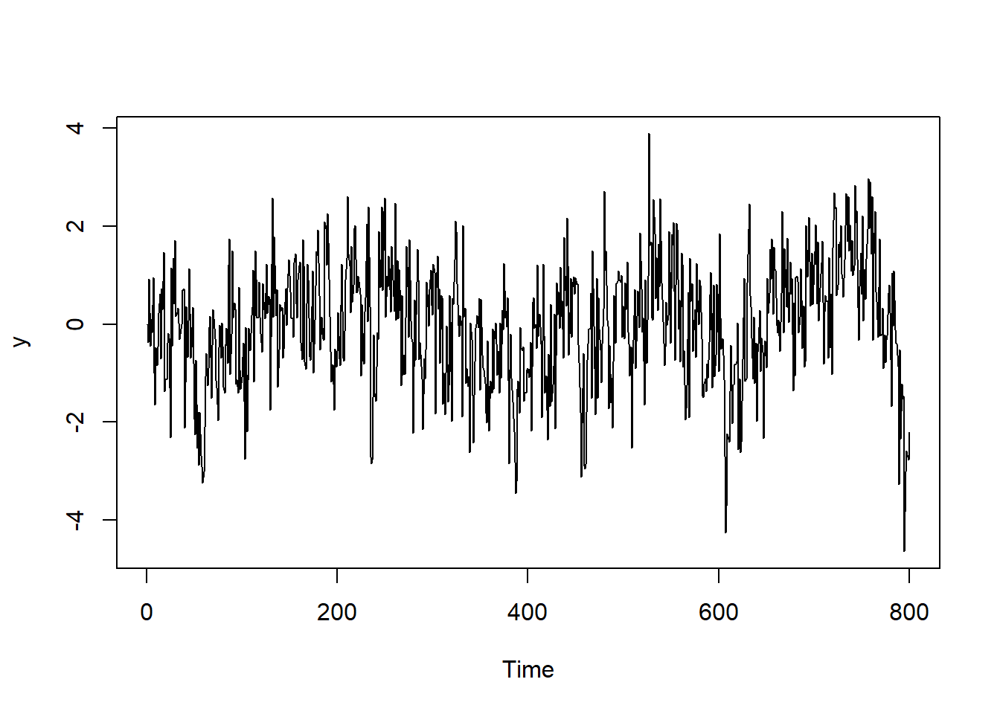
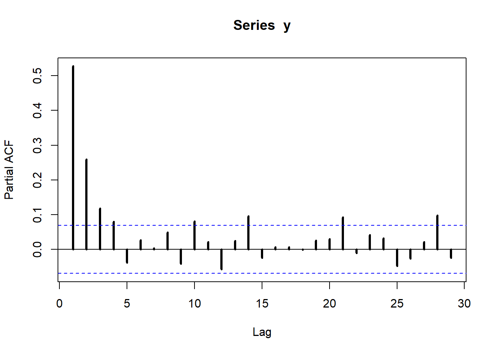

Session 4 ARMA(1,1) model
4.1 MLE for the ARMA(1,1)
In this session we consider the ARMA(1,1) model:
\[ y_t = c + \phi y_{t-1} + \theta \varepsilon_{t-1} + \varepsilon_t, \quad \varepsilon_t \sim WN(0, \sigma^2_\varepsilon) \]
Below we simulate an ARMA(1,1) model with Gaussian iid noise terms: \(\varepsilon_t \sim \mathcal{N}(0, \sigma^2_\varepsilon)\).
## Setup parameters for simulation
t_max <- 800
y0 <- 0
const <- 0
phi <- 0.9
theta <- -0.5
sigma_eps <- 1
## Simulation ARMA(1,1)
eps <- rnorm(t_max+1, sd = sigma_eps)
y <- c()
y[1] <- y0
for (t in 2:t_max) {
y[t] <- const + phi*y[t-1] + theta*eps[t-1] + eps[t]
}

We now turn to estimate the model by maximum likelihood. We can then compare the estimates with the true values of the parameters that we used to simulate the data. Notice that the distribution of observation \(y_t\) given all the information set \(I_{t-1}\) available up to time \(t-1\) is
\[ y_t | I_{t-1} \sim \mathcal{N}(c + \phi y_{t-1} + \theta \varepsilon_{t-1}, \ \sigma^2_\varepsilon). \]
Let $ = (c, , , ^2_)$ denote the vector of parameters of the model. The conditional likelihood can be obtained as:
\[ L(\eta; y_1, \dots, y_T) = \prod_{t=2}^T \frac{1}{\sqrt{2\pi\sigma^2_{\varepsilon}}} \exp\left( -\frac{1}{2\sigma^2_\varepsilon} (y_t - c - \phi y_{t-1} - \theta \varepsilon_{t-1} )^2 \right) \]
where the conditioning is on the first observation \(y_1\). Taking the logarithm and defining \(\hat \varepsilon_t = y_t - c - \phi y_{t-1} - \theta \varepsilon_{t-1}\) we get
\[ \ell(\eta ; y_1, \dots, y_T) = - \frac{T-1}{2} \log(2\pi\sigma^2_\varepsilon) - \frac{1}{2\sigma^2_\varepsilon} \sum_{t=2}^T \hat\varepsilon_t^2 \]
The estimate of the innovations can be obtained using a filtering procedure: for a given value of the parameters \(\eta = (c, \phi, \theta, \sigma^2_\varepsilon)\), we set \(\hat\varepsilon_1\) equal to the deviation from the unconditional mean of the first observation, \(\hat\varepsilon_1 = y_1 - \frac{c}{1-\phi}\), and then we compute \(\hat\varepsilon_{t} = y_t - c - \phi y_{t-1} + \theta \hat\varepsilon_{t-1}\) recursively for \(t = 2, \dots, T\). Then we can use the estimated sequence of innovations \(\{\hat\varepsilon_t\}_{t=2}^T\) to evaluate the log-likelihood in \(\eta\).
## Estimation: filtering
## 1-step ahead conditional mean of ARMA(1,1) model
arma_filter <- function(x, params){
# get parameters
const <- params[1]
phi <- params[2]
theta <- params[3]
## initialize intercept, innovation
mu <- rep(0, length(x))
mu[1] <- const/(1-phi)
eps <- rep(0, length(x))
eps[1] <- x[1] - mu[1]
# filter and innovations
for(t in 2:length(x)){
mu[t] <- const + phi*x[t-1] + theta*eps[t-1]
eps[t] <- x[t] - mu[t]
}
# output: estimated innovations
eps
}arma_loglik <- function(x, params){
# params now include (c, phi, theta, sigma2)
t_max <- length(x)
sigma2 <- params[4]
eps <- arma_filter(x, params[1:3])
# compute loglik
loglik <- -0.5*t_max*log(2*pi*sigma2) - (1/(2*sigma2))*sum(eps^2)
# nlm() minimizes functions --> we swap the sign of the log-likelihood
# (max L = min -L)
-loglik
}## Warning in nlm(arma_loglik, p = c(0, 0.1, 0, 1), x = y): NA/Inf sostituito da
## valore massimo positivo
## Warning in nlm(arma_loglik, p = c(0, 0.1, 0, 1), x = y): NA/Inf sostituito da
## valore massimo positivo
## Warning in nlm(arma_loglik, p = c(0, 0.1, 0, 1), x = y): NA/Inf sostituito da
## valore massimo positivo## [,1] [,2]
## [1,] 0.0 -0.005
## [2,] 0.9 0.873
## [3,] -0.5 -0.515
## [4,] 1.0 1.0304.2 Exercises
Exercise 1 (LASSO as OLS with thresholding)
Consider the linear regression model \(y = X\beta + \varepsilon\) with uncorrelated regressors: \(X'X = I_n\), where \(X\in\mathbb{R}^{T\times n}\). Show that the LASSO estimator \[ \hat\beta^{(\lambda)} = \arg\min_{\beta \in \mathbb{R}^n} \ (y-X\beta)'(y-X\beta) + \lambda ||\beta||_1 \] can be written as
\[ \hat\beta_j^{(\lambda)} = \begin{cases} \hat\beta_j^{OLS} - \frac{\lambda}{2} & \qquad \text{if} \quad \hat\beta_j^{OLS} > \frac{\lambda}{2} \\ \hat\beta_j^{OLS} + \frac{\lambda}{2} & \qquad \text{if} \quad \hat\beta_j^{OLS} < -\frac{\lambda}{2} \\ 0 & \qquad \text{if} \quad \hat\beta_j^{OLS} \in \left[ -\frac{\lambda}{2}, \frac{\lambda}{2} \right]\\ \end{cases} \]
where \(\hat\beta_j^{OLS}\) denotes the \(j\)-th entry of the OLS estimator and \(j = 1, \dots, n\).
Exercise 2 (MA(\(\infty\)) representation of stationary ARMA(1,1))
Show that the ARMA(1,1) process with \(|\phi| < 1\)
\[ y_t = c + \phi y_{t-1} + \theta \varepsilon_{t-1} + \varepsilon_t, \quad \varepsilon_t \sim WN(0, \sigma^2_\varepsilon) \]
can be rewritten as
\[ y_t = \mu + \sum_{j=0}^\infty \psi_j \varepsilon_{t-j}, \]
for \(\mu = \frac{c}{1-\phi}\), \(\psi_0 = 1\), \(\psi_j = (\phi + \theta)\phi^{j-1}\).
Exercise 3 (autocovariance function of the ARMA(1,1))
Show that the covariance function \(\gamma(k) = \text{cov}(y_t, y_{t-k})\) of the ARMA(1,1) process
\[ y_t = c + \phi y_{t-1} + \theta \varepsilon_{t-1} + \varepsilon_t, \quad \varepsilon_t \sim WN(0, \sigma^2_\varepsilon) \]
with \(|\phi < 1|\) can be written as
\[ \gamma(k) = \begin{cases} \sigma^2_\varepsilon \left(1 + \frac{(\phi+\theta)^2}{1-\phi^2}\right) & \qquad \text{for} \quad k=0 \\[1em] \sigma^2_\varepsilon \left(\phi+\theta + \frac{(\phi+\theta)^2\phi}{1-\phi^2}\right) & \qquad \text{for} \quad k=1 \\[1em] \phi^{k-1} \ \gamma(1) & \qquad \text{for} \quad k>1 \end{cases} \]
Hint: you may use the fact that for a linear time series \(y_t = \mu + \sum_{j=0}^\infty \psi_j \varepsilon_{t-j}\) the autocovariance function is given by
\[ \gamma(k) = \sigma^2_\varepsilon \sum_{j=k}^\infty \psi_j \psi_{j-k}, \]
provided that \(\sum_{j=0}^{\infty} \psi_j^2 < \infty\).